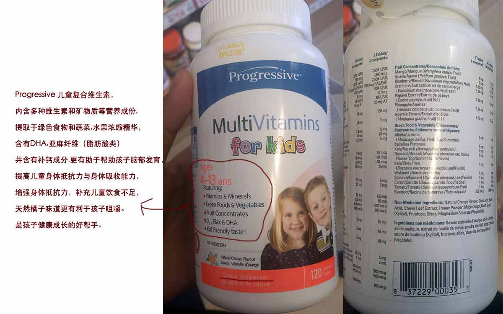
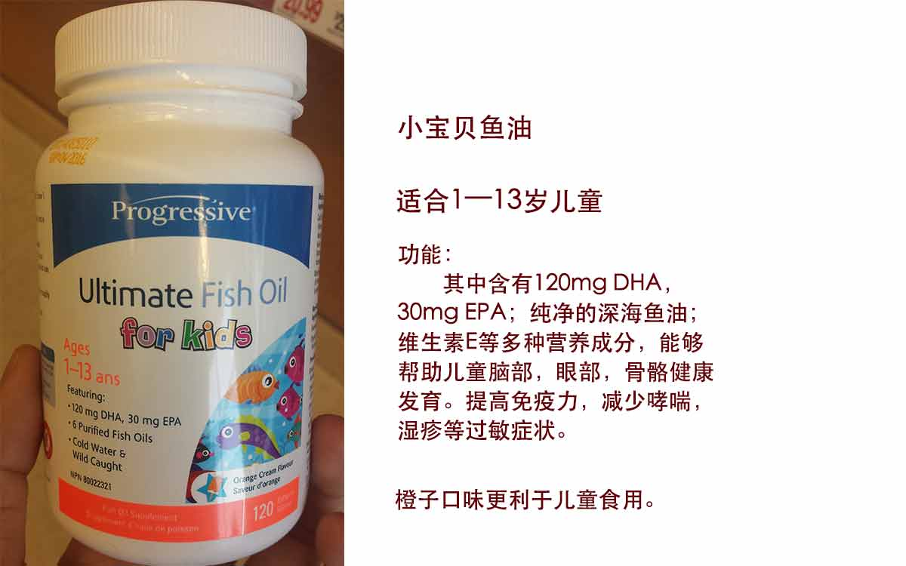
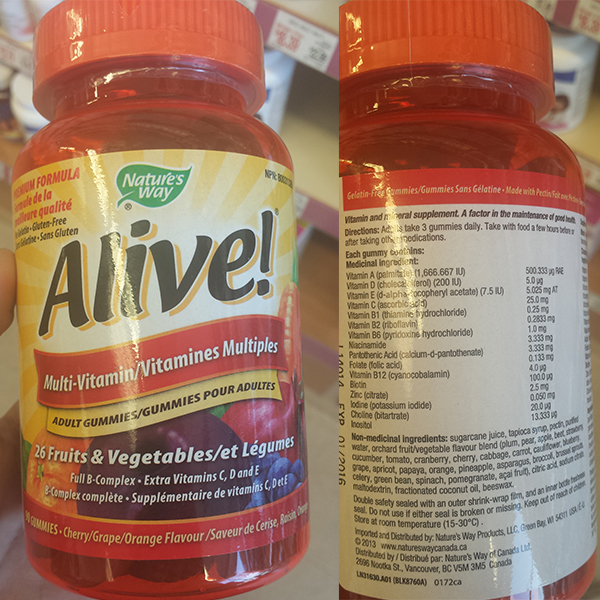
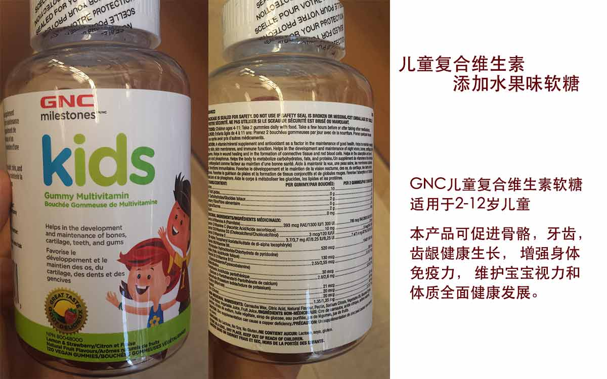
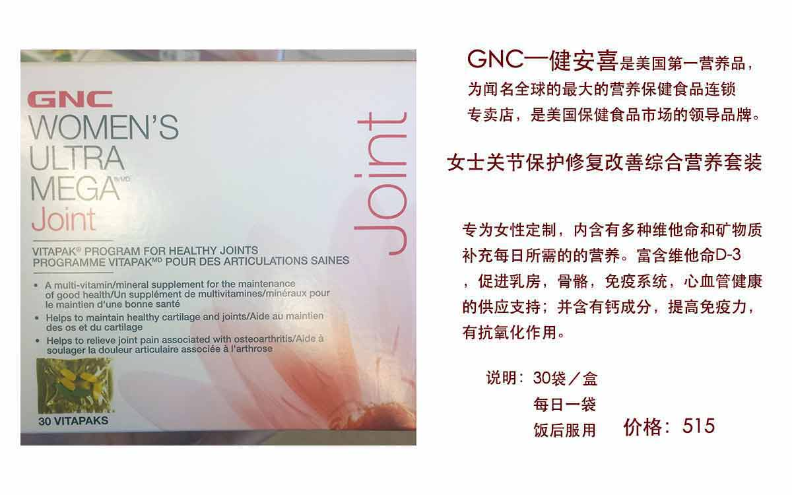
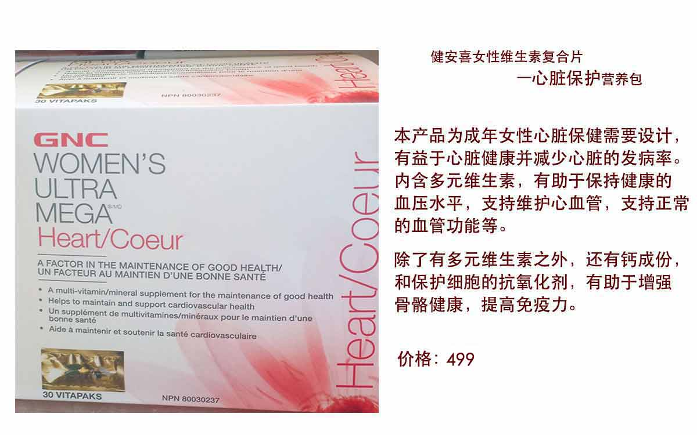
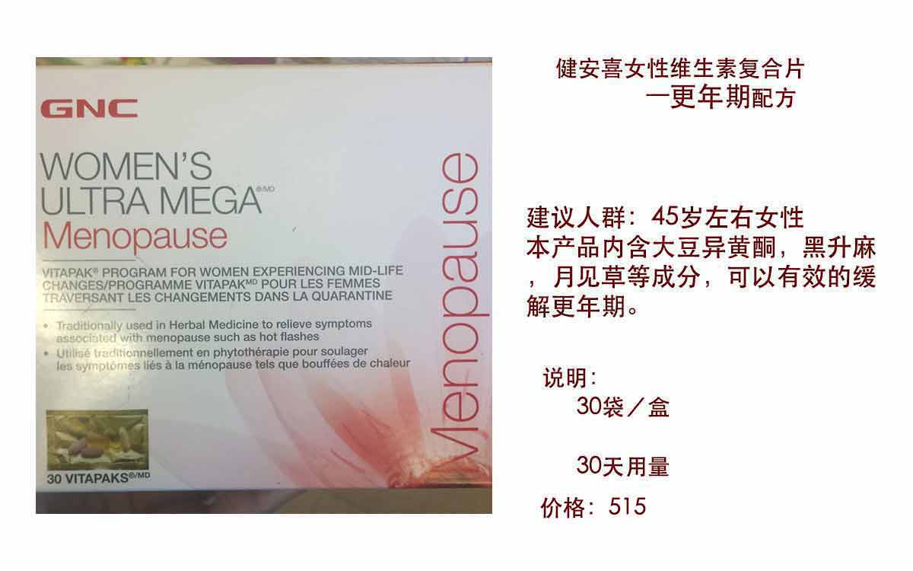
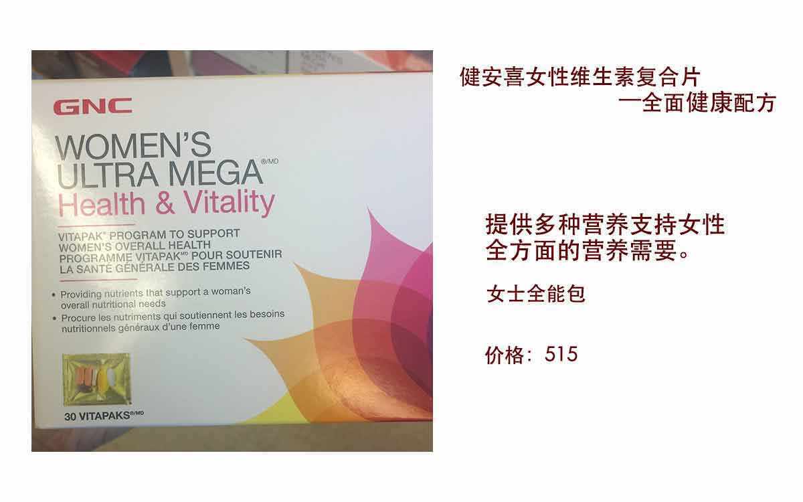

男性保健品
儿童保健品

Progressive 儿童复合维生素，内含多种维生素和矿物质等营养成份，提取于绿色食物和蔬菜，水果浓缩精华，含有DHA,亚麻纤维（脂肪酸类）并含有补钙成分，更有助于帮助孩子脑部发育，提高儿童身体抵抗力与身体吸收能力，增强身体抵抗力，补充儿童饮食不足，天然橘子味道更有利于孩子咀嚼。是孩子健康成长的好帮手。

功能：其中含有120mg DHA，30mg EPA；纯净的深海鱼油；维生素E等多种营养成分，能够帮助儿童脑部，眼部，骨骼健康发育。提高免疫力，减少哮喘，湿疹等过敏症状。

儿童果蔬维生素&钙浓缩，由享誉全球的德国保健品品牌Salus公司生产，本产品是由水果蔬菜中提取精华构成，有帮助儿童骨骼，牙齿，齿龈，软骨，夜视等健康发育的功能，还有助于维护视力，皮肤，皮肤薄膜和免疫系统。本产品为儿童多种维他命与钙营养液，所以更适合儿童服用与良好的吸收，帮助宝宝促进身体和智力健康发展。

GNC儿童复合维生素软糖，含有各类维生素，促进钙吸收，适用于2-12岁儿童，本产品可促进骨骼，牙齿，齿龈健康生长， 增强身体免疫力， 维护宝宝视力和体质全面健康发展。
作为膳食营养补充，2-4岁的儿童每天1粒，4岁以上的儿童每天2粒，均为纯天然果蔬制成，是宝宝们喜欢的味道。
女性保健品




解释说明
以上产品均为膳食营养补充剂，不能代替药物。食用量不宜超过推荐量或与同类营养补充剂同时使用。
关于代购时间：
1. 加拿大到中国的国际邮递时间，一般3－4周左右，北京地区差不多3周左右；
2. 国际快递有时会因一些不可预估的因素延误，比如国际航班延误，中加海关查件，中加法定假日等，可能会延长交易时间。希望大家能理解。
大家如果有感兴趣的可以加我微信，欢迎咨询。也请大家放心，加拿大的产品都是货真价实的，希望大家相信我，也欢迎大家多提建议。
如果支持我，也拜托大家帮我小小的宣传一下，谢谢。
这个网址会随时更新，也会不断改进，希望感兴趣的你们随时关注。
微信号：ct918227
微信二维码：